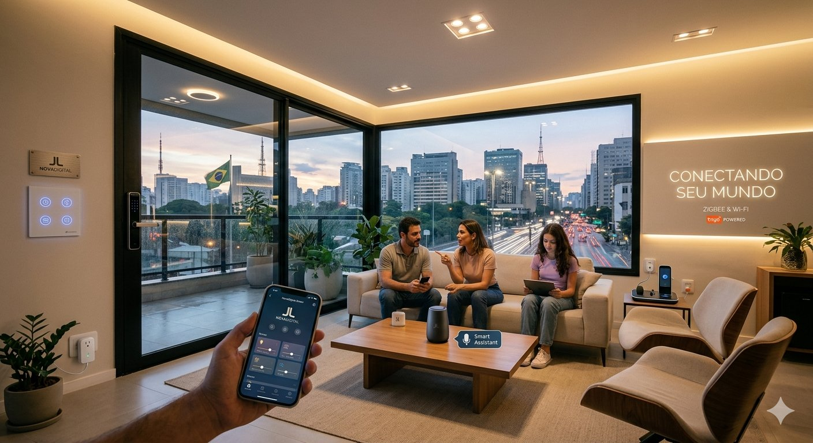

Innovación digital
Desarrollar ideas y soluciones tecnológicas que respondan a las necesidades del mundo actual.
Transformamos ideas en soluciones digitales modernas, eficientes y preparadas para los desafíos del futuro.
Tecnología con visión de futuro.
JL NOVADIGITAL es una propuesta tecnológica enfocada en el desarrollo de soluciones digitales innovadoras que combinan tecnología, creatividad y eficiencia.
Nuestro propósito es utilizar las herramientas digitales para crear experiencias modernas que aporten valor a las personas, empresas y comunidades.
Innovar hoy para construir las soluciones digitales del mañana.

Tecnología diseñada para generar nuevas oportunidades.
Desarrollar ideas y soluciones tecnológicas que respondan a las necesidades del mundo actual.
Utilizar la tecnología para optimizar procesos, recursos y experiencias digitales.
Crear herramientas digitales que permitan evolucionar y adaptarse a un entorno tecnológico en constante cambio.
Una visión tecnológica construida sobre cuatro pilares.
Incorporamos herramientas digitales actuales para desarrollar soluciones modernas y funcionales.
Creamos experiencias visuales intuitivas, atractivas y adaptadas a las necesidades de cada proyecto.
Buscamos nuevas formas de utilizar la tecnología para convertir ideas en oportunidades.
Promovemos soluciones digitales responsables que contribuyan a un futuro más eficiente.
Tecnología que aporta valor real.
Propuestas digitales alineadas con las tendencias tecnológicas actuales.
Herramientas que ayudan a mejorar procesos y aprovechar mejor los recursos disponibles.
Diseños pensados para ofrecer experiencias claras, atractivas y fáciles de utilizar.
Una identidad tecnológica preparada para evolucionar junto con las nuevas necesidades digitales.
Nuestra tecnología busca generar soluciones que aporten valor y nuevas posibilidades.
Impulsamos la transformación mediante herramientas y soluciones digitales.
Facilitamos nuevas formas de conexión entre personas, ideas y tecnología.
Creamos oportunidades mediante innovación y aprovechamiento tecnológico.
Apostamos por una visión digital preparada para los retos del mañana.